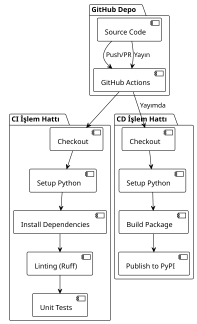

Bölüm 1 : Python ve PyPI için basit bir CI/CD hattı oluşturun
Yayınlandı: 17 July 2025
Giriş
Geliştirme süreçlerinin otomasyonu modern projelerde kaçınılmaz hale gelmiştir. İyi tasarlanmış bir CI/CD borusu, sadece geliştirme döngüsünün erken aşamasında regresyonları tespit etmekle kalmaz, aynı zamanda dağıtım sürecinin tamamen otomatize edilmesini de sağlar.
Bu makalede, bir Python uygulaması için GitHub Actions kullanarak tam bir CI/CD pipeline oluşturma sürecini, sürekli entegrasyondan (CI) PyPI üzerindeki sürekli dağıtıma (CD) kadar inceleyeceğiz.
Pipeline Mimarisi
Pipeline’ımız iki ayrı workflow’tan oluşur :
-
CI Hattı: Her push ve pull request’te çalıştırılır
-
CD Pipeline: Sadece GitHub yayınları sırasında tetiklenir.

(CI) Sürekli Entegrasyon İşlem Hattı Yapılandırması
CI İş Akışı Yapısı
CI iş akışı, kod üzerindeki her katkısıyı doğrulamak için tasarlanmıştır. İşte tam konfigürasyonu:
name: CI/CD Pipeline
on:
push:
branches:
- main
pull_request:
branches:
- main
jobs:
build:
runs-on: ubuntu-latest
steps:
- name: Checkout code
uses: actions/checkout@v4
- name: Set up Python
uses: actions/setup-python@v5
with:
python-version: '3.x'
- name: Install dependencies
run: |
python -m pip install --upgrade pip
pip install -r requirements.txt
pip install ruff pytest pytest-mock
- name: Run Linting (Ruff)
run: ruff check .
- name: Run Tests (Pytest)
run: pytestCI Aşamaları Analizi
Tetikleyiciler (on)
----
on:
push:
branches:
- main
pull_request:
branches:
- main
----
Boruhattı tetiklenir : Dal üzerindeki her push`main` - Her bir pull request doğrultusunda`main`
Bu yaklaşım, ana kodun stabil kalmasını sağlar ve tüm katkılar entegrasyon öncesi onaylanır.
==== Çalıştırma Ortamı
```yaml
----
runs-on: ubuntu-latest
----
Ubuntu Latest, çoğu Python projesi için performans, maliyet ve uyumluluk arasında iyi bir denge sunar.
==== Kodun Checkoutu
```yaml
----
- name: Checkout code
uses: actions/checkout@v4
----
Eylem`checkout@v4`depo kaynak kodunu alır. v4 sürümü performans ve güvenlik iyileştirmeleri getirir.
==== 4. Python yapılandırması
```yaml
----
- name: Set up Python
uses: actions/setup-python@v5
with:
python-version: '3.x'
----
Kullanımı`'3.x'`Python 3'in en güncel kararlı sürümünü otomatik olarak kullanmasını sağlayarak bakımı basitleştirir.
==== 5. Bağımlılıkların Yüklenmesi
```yaml
----
- name: Install dependencies
run: |
python -m pip install --upgrade pip
pip install -r requirements.txt
pip install ruff pytest pytest-mock
----
Bu adım: - Pip'i son sürüme güncellendi Proje bağımlılıklarını yükle - Geliştirme araçlarını ekle (linting ve testler)
==== 6. Ruff ile linting
```yaml
----
- name: Run Linting (Ruff)
run: ruff check .
----
**Ruff**Python için ultra hızlı bir Rust tabanlı linterdır. Birden fazla araç (Flake8, Black, isort)'ün işlevselliğini tek performanslı bir araçta birleştirir.
==== 7. Testlerin yürütülmesi
```yaml
----
- name: Run Tests (Pytest)
run: pytest
----
Pytest tüm test paketini çalıştırarak, değişikliklerin regresyon oluşturmayacağını garanti eder.
== Dağıtım iş hattı yapılandırması (CD)
=== CD İş Akışı Yapısı
CD iş akışı yalnızca GitHub sürümleri sırasında tetiklenir ve PyPI'de yayınlamayı otomatikleştirir :
[source,yaml]
----
name: Publish to PyPI
on:
release:
types:
- published
jobs:
deploy:
runs-on: ubuntu-latest
steps:
- name: Checkout code
uses: actions/checkout@v4
- name: Set up Python
uses: actions/setup-python@v5
with:
python-version: '3.x'
- name: Install dependencies
run: |
python -m pip install --upgrade pip
pip install setuptools wheel twine
- name: Build and publish
env:
TWINE_USERNAME: __token__
TWINE_PASSWORD: ${{ secrets.PYPI_API_TOKEN }}
run: |
python setup.py sdist bdist_wheel
twine upload dist/*
----
=== CD Aşamaları Analizi
==== 1. Serbest bırakma tetikleyicisi
```yaml
----
on:
release:
types:
- published
----
CD ardışık hattı, yalnızca bir GitHub Yayını yayınlandığında tetiklenir. Bu yaklaşım dağıtımlar üzerinde hassas kontrol sağlar.
==== 2. Derleme Araçlarının Kurulumu
```yaml
----
pip install setuptools wheel twine
----
- **setuptools**Python paketleme araçları - **wheel**Modern Python dağıtım formatı - **iplik**PyPI'ye güvenli yükleme aracı
==== 3. Kimlik Doğrulama Yapılandırması
```yaml
----
env:
TWINE_USERNAME: __token__
TWINE_PASSWORD: ${{ secrets.PYPI_API_TOKEN }}
----
Kimlik doğrulama, bir GitHub gizli olarak saklanan PyPI API belirteci kullanır ve klasik kimlik bilgilerinden daha güvenlidir.
==== 4. Derleme ve Yayın
```yaml
----
run: |
python setup.py sdist bdist_wheel
twine upload dist/*
----
- `sdist`Kaynak dağılımı oluşturur - `bdist_wheel`Bir wheel (ikili dağıtım) oluştur - `twine upload`Dağıtımları PyPI'de yayınla
== Python Paketi Yapılandırması
=== setup.py'nin yapısı
Pipeline'ın çalışması için projeniz bir dosya içermelidir.`setup.py`:
[source,python]
----
from setuptools import setup, find_packages
with open("README.adoc", "r", encoding="utf-8") as fh:
long_description = fh.read()
setup(
name="playlist-downloader",
version="1.0.0",
author="Votre Nom",
author_email="votre.email@example.com",
description="CLI tool for managing YouTube playlists",
long_description=long_description,
long_description_content_type="text/plain",
url="https://github.com/cheroliv/playlist-downloader",
packages=find_packages(),
classifiers=[
"Development Status :: 4 - Beta",
"Intended Audience :: Developers",
"License :: OSI Approved :: MIT License",
"Operating System :: OS Independent",
"Programming Language :: Python :: 3",
"Programming Language :: Python :: 3.8",
"Programming Language :: Python :: 3.9",
"Programming Language :: Python :: 3.10",
"Programming Language :: Python :: 3.11",
],
python_requires=">=3.8",
install_requires=[
"typer>=0.9.0",
"yt-dlp>=2023.1.6",
"google-api-python-client>=2.70.0",
"google-auth-oauthlib>=0.7.1",
"pymonad>=2.4.0",
"pyyaml>=6.0",
],
entry_points={
"console_scripts": [
"playlist-downloader=cli:app",
],
},
)
----
=== Setup.py'nin Önemli Noktaları
1. **Metadata**İsim, sürüm, yazar, açıklama
2. **Bağımlılıklar**Gerekli paketler listesi
3. **giriş noktaları**: Gösterilen CLI komutları
4. **sınıflandırıcılar**PyPI için meta veri
== GitHub Secret'leriyle güvenli bir yöntem
=== PyPI Belirteci Yapılandırması
1. **PyPI'de bir API jetonu oluştur** :
PyPI'ye giriş yapın - Hesap Ayarları > API belirteçlerine gidin - Uygun izinlere sahip yeni bir jeton oluşturun
1. **GitHub'da gizli bilgiyi ekleyin**:
- Depo Ayarları > Gizli bilgiler ve değişkenler > Actions Bir ad verilmiş yeni bir secret oluşturun`PYPI_API_TOKEN` - PyPI jetonunuzu yapıştır
[plantuml, secrets-flow, svg]
----
@startuml
!theme plain
actor Developer as dev
participant "GitHub Depo" as repo
participant "GitHub İşlemler" as actions
participant PyPI
dev -> repo : PYPI_API_TOKEN gizliyi yapılandır
repo -> actions : Yayın sırasında CD pipeline'ını tetiklemek
actions -> actions : Gizli bilgiye güvenli erişim
actions -> PyPI : Belirteçle kimlik doğrulama yap
PyPI -> PyPI : Paketi doğrula ve yayınla
note over actions, PyPI
Asla günlüklerde gösterilmez
Otomatik döndürme mümkün
end note
@enduml
----
== Tam Dağıtım İş Akışı
=== Dağıtım Sırası
[plantuml, deployment-sequence, svg]
----
@startuml
!theme plain
actor Developer as dev
participant "Yerel Git" as git
participant "GitHub" as github
participant "GitHub Eylemler" as actions
participant PyPI
participant "Son Kullanıcılar" as users
dev -> git : git tag v1.0.0
dev -> git : git push origin v1.0.0
git -> github : Push tag
dev -> github : Tag'den yayın oluştur
github -> actions : CD pipeline'ini tetikle
actions -> actions : Ödeme kodu
actions -> actions : Python ortamını kurun
actions -> actions : Derleme araçlarını kur
actions -> actions : Dağıtımları oluşturun (sdist + wheel)
actions -> PyPI : Jeton kullanarak PyPI'e yükleyin
PyPI -> PyPI : Doğrula ve Yayınla
users -> PyPI : pip install playlist-downloader
note over dev, github
Yayın oluşturma otomatize edilebilir
veya GitHub kullanıcı arayüzü üzerinden manuel olarak yapılabilir
end note
@enduml
----
=== Pipeline Durumları
[plantuml, pipeline-states, svg]
----
@startuml
!theme plain
[*] --> Idle
Idle --> CI_Running : Push/PR oluşturuldu
CI_Running --> CI_Success : Tüm kontroller başarılı olur
CI_Running --> CI_Failed : Linting/Tests başarısız
CI_Success --> Idle : Birleştirme tamamlandı
CI_Failed --> Idle : Düzelt ve yeniden dene
Idle --> CD_Running : Yayınlanmış sürüm
CD_Running --> CD_Success : Paket yayınlandı
CD_Running --> CD_Failed : Build/Upload hata
CD_Success --> Idle : PyPI üzerindeki paket
CD_Failed --> Idle : Düzelt, yeniden deneyin ve yayınlayın
note on link #red : Bloklar birleşir
note on link #green : Dağıtım izni verir
@enduml
----
== İyi Uygulamalar ve Optimizasyonlar
=== 1. Version Yönetimi
Semantik Git etiketlerini kullanın
```bash
----
git tag -a v1.2.3 -m "Release version 1.2.3"
git push origin v1.2.3
----
=== 2. Matris testleri
Birden fazla Python sürümünde test yapmak için :
```yaml
----
strategy:
matrix:
python-version: [3.8, 3.9, "3.10", "3.11"]
----
=== 3. Bağımlılık Önbelleği
Belleği kullanarak derlemeleri hızlandırın :
```yaml
----
- name: Cache pip dependencies
uses: actions/cache@v3
with:
path: ~/.cache/pip
key: ${{ runner.os }}-pip-${{ hashFiles('**/requirements.txt') }}
----
=== 4. Dağıtım Ortamları
Kontrollü dağıtımlar için GitHub ortamlarını kullanın :
```yaml
----
jobs:
deploy:
environment: production
runs-on: ubuntu-latest
----
== Kullanım Durumları ve Mimari
=== Kullanım Durumu Diyagramı
[plantuml, use-cases, svg]
----
@startuml
!theme plain
left to right direction
actor "Developer" as dev
actor "GitHub Actions" as ga
actor "End User" as user
package "CI/CD System" {
usecase "Run Linting" as lint
usecase "Execute Tests" as test
usecase "Build Package" as build
usecase "Publish to PyPI" as publish
usecase "Create Release" as release
}
dev --> lint : Kod gönderir
dev --> test : Kod gönderir
dev --> release : Bir sürüm oluşturur
ga --> build : Tetiği serbest bıraktığınızda
ga --> publish : Başarılı derleme sonrası
user --> publish : İndirme paketi
lint .> test : triggers
test .> build : on success
build .> publish : on success
@enduml
----
=== Dağıtım Mimarisi
[plantuml, deployment-architecture, svg]
----
@startuml
!theme plain
cloud "GitHub" {
[Source Repository]
[GitHub Actions]
[Secrets Store]
}
cloud "PyPI" {
[Package Registry]
[Distribution Files]
}
node "CI/CD Boru hattı" {
[Linting]
[Testing]
[Building]
[Publishing]
}
[Source Repository] --> [GitHub Actions] : Triggers
[GitHub Actions] --> [Linting]
[Linting] --> [Testing]
[Testing] --> [Building]
[Building] --> [Publishing]
[Publishing] --> [Package Registry] : Uploads
[Secrets Store] --> [Publishing] : Provides token
note as N1
Güvenli jeton tabanlı kimlik doğrulama
end note
[Secrets Store] .. N1
@enduml
----
== İzleme ve Hata Ayıklama
=== Loglar ve İzleme
GitHub Actions her adım için ayrıntılı loglar sağlar. Hata ayıklama için:
1. **Logları inceleyin**her adımın
2. **Debug modunu etkinleştirin**ile`ACTIONS_STEP_DEBUG`
3. **Artifact'leri kullanın**derinleme dosyalarını yedeklemek için
```yaml
----
- name: Upload build artifacts
uses: actions/upload-artifact@v3
if: failure()
with:
name: build-logs
path: build/
----
=== Bildirimler
Slack veya e-posta bildirimleri ekleyin
```yaml
----
- name: Notify on failure
if: failure()
uses: 8398a7/action-slack@v3
with:
status: ${{ job.status }}
webhook_url: ${{ secrets.SLACK_WEBHOOK }}
----
== Sonuç
GitHub Actions ile sağlam bir CI/CD işlem hattı oluşturmak, geliştirme deneyiminizi kökten değiştirir. Linting, testleri ve dağıtımı otomatikleştirdiğinizde, siz:
- **Hataları azaltın**Üretimde - **Döngüleri hızlandırın**gelişim - **Güveni artırın**sürümlerinizde - **İşbirliğini kolaylaştırın**ekip olarak
Bu ardışık düzen, linting araçları, test çerçeveleri veya dağıtım hedeflerini ayarlayarak çeşitli tipteki Python projelerine uyarlanabilir.
Bu iş akışlarının yapılandırmasındaki başlangıç yatırımı, zaman tasarrufu ve dağıtımlar sırasında manuel hataların azalması sayesinde hızla geri döner.
== Ek Kaynaklar
- https://docs.github.com/en/actions[GitHub Actions Belgeleri] - https://packaging.python.org/[Python Paketleme Kılavuzu] - https://docs.pytest.org/[Pytest Dokümantasyonu] - https://docs.astral.sh/ruff/[Ruff Dokümantasyonu] - https://twine.readthedocs.io/[Twine Belgeleri]
Bir işlevsel pipeline başarıyla ulaşıldı ! Şimdi, testlerinizi otomatikleştirebileceğiniz ve Python paketinizi PyPI'de doğrudan GitHub Actions üzerinden yayınlayabilmenize olanak tanıyan basit bir CI/CD pipeline'a sahipsiniz.
Ancak, bu pipeline istenerek minimalist tutulmaktadır. Henüz profesyonel bir bağlamda gerekli olan bazı yönleri hâlâ kapsamıyor:
Python'un çoklu sürüm testleri,
Otomatik güvenlik analizi,
Test PyPI üzerinden aşamalı dağıtım,
İşlem hattı izleme ve ölçümleri,
Versiyonlama otomasyonu ve modern iyi uygulamaların entegrasyonu (pyproject.toml).
Bir sonraki bölümde, seviyeyi bir yukarı taşıyacağız. Bu temel pipeline'ı, üretim için hazır, sağlam ve güvenli gerçek bir endüstriyel dağıtım zincirine dönüştürmeyi öğreneceksiniz.